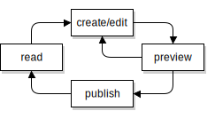
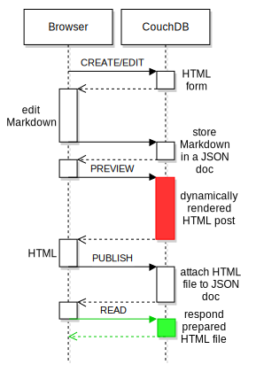
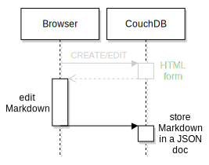
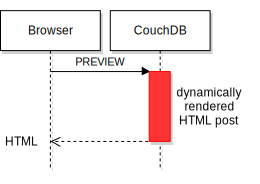
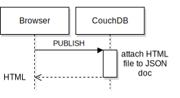
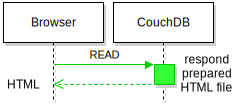
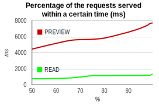

Static websites and blogs with CouchDB
Web performance is basically not a beast - loading as less as possible amount (~10KB) of pre-rendered html/css in as less as possible http requests (~1) will display the site in a really short time (~300ms). Let's do it with a CouchDB.
blog post life-circle
 The life-circle is very common. Finally a post should be only one request away. Beyond to minimize the server-side computing time the post should be ready for response "as is". Like static HTML sites on the disk.
Very similar to Jekyll a post has a source code in Markdown which will be rendered to HTML every time a post gets published. The later readers request will be responded with that prepared site.
A CouchDB can store static files as attachments of database documents. When such an attachments gets requested:
The raw data of the associated attachment is returned (just as if you were accessing a static file. The returned HTTP Content-type will be the same as the content type set when the document attachment was submitted into the database. CouchDB docs
The following implementation is not a competition to Jekyll in any meaning - it's simply the port of the idea to a CouchDB - CouchApp.
the request-response flow
 The ideal flow of create, preview, publish to read needs at least five requests. The outlined durations showing how the performance win possibly can be achieved.
Sure, how much the performance is increasing can a live test show only. Fortunately no additional test case must be defined: the comparison of the preview and the read request is enough.The approximately same amount of similar HTML (the preview has an additional but small form included) gets loaded. Apples are compared with (little bigger) apples.
The CouchDB log should be a credible measuring tool. The numbers will be discussed when available.
coding CREATE/EDIT

For faster prototyping no HTML form will be implemented. CouchDB's built-in management console (assessable under localhost:5984/_utils) will do the job well.
Remains to define a rewrite rule, a doc schema and validations for doc updates.
A PUT of JSON to the URI /post/hello-world stores the post. Thats the necessary rewrite rule for the rewrites.json.
{
"from": "post/:pid",
"to": "../../:pid",
"method": "PUT"
}
As described above the JSON doc gets the final version of the blog post as HTML file - called static.html. The _id must be a URL-safe string - e.g. the post title. The content source is stored separately in the properties title, teaser and markdown.
{
"_id": "", // e.g. hello-world
"_rev": "",
"_attachements": {
"static.html": {} //published post
},
"title": "Hello World!", //content src
"teaser": "", //content src
"markdown": "", //content src
"created_at": "",
"edited_at": "",
"publish_at": "",
"type": "blogpost"
}
To ensure the semantic and structural correctness of the JSON post docs every write access (create, update, delete) needs to be validated before.
A design document may contain a function named validate_doc_update which can be used to prevent invalid or unauthorized document update requests from being stored. CouchDB docs
The validate_doc_update.js ensures:
- only signed in user can send requests
- only members of the role 'writer' and admins are authorized
- content properties are present and not empty
- doc type is 'blogpost'
- the create and update timestamps are present and in chronological order
- same for the optional publish timestamp
The code details are viewable as github commit and tag. The resulting file/JSON structure is:
ddoc
|_ docs
| |_test-post //test data
|_ vendor //commonjs libs
| |_ validateDocUpdateUtils
|_ rewrites
|_ validate_doc_update
coding PREVIEW

The preview call lets the CouchDB merge a HTML template with the content source properties title, teaser and markdown. The current static.html don't gets updated. The preview website contains a small form to publish the preview which would overwrite the static.html finally. So, the markdown property can have a totally different content (useful as draft) to the static.html.
The preview step in the whole flow is the most complex. Thats the reason why it exists. It should ensure that the biggest server load is done before the first reader enters the post and not on every request.
First, the rewrite rule:
{
"from": "post/:pid/preview",
"to": "_show/preview/:pid",
"method": "GET"
}
The rule forwards a request like /post/hello-world/preview to a CouchDB show named "preview" (stored in shows/preview.js). The show gets the JSON post doc and:
- Renders via marked.js the
doc.markdowncontent to HTML. - Merges a HTML template with the rendered markdown and the content from
doc.titleanddoc.teaservia mustache.js. - Responses the (dynamically rendered) HTML site to the browser.
The code details are viewable as github commit and tag. The resulting file/JSON structure is:
ddoc
|_ vendor
| |_ mustache
| |_ marked
|_ shows
| |_ preview
|_ templates
| |_ post
|_ rewrites
coding publish
 When the post should be published a little JavaScript form:
- takes a copy of the current site
- removes the upload form from the copy
- uploads the copy as Base64-encoded attachment to the CouchDB
The upload form will be appended to HTML of the response from the PREVIEW as mustache partial (templates/uploadform).
The last step is worth a closer look. The CREATE/EDIT-endpoint could be used - the JSON doc to be send have to include the static.html like (CouchDB docs):
{
...,
"_attachments": {
"static.html": {
"content_type":"text\/html",
"data": btoa("<html>...</html>")
}
},
...
}
The drawback is that the preview response have to include the whole JSON post doc - not only the response amount increases directly proportional to the content length also the big chunk of JSON have to be evaluated. The steps READ and PREVIEW will become not longer comparable.
The solution is to use a CouchDB update handler. Rewrite rule:
{
"from": "post/:pid/publish",
"to": "_updates/publish/:pid",
"method": "POST"
}
Only the _id and _rev (to ensure updating latest version only) have to be known. The Base64-encoded HTML gets posted to the updates/publish.js where the JSON post doc gets merged with the attachment as showed above (but server-side now). The code details are viewable as github commit and tag. The resulting file/JSON structure is:
ddoc
|_ templates
| |_ post
| |_ uploadform
|_ updates
| |_publish
|_ rewrites
coding READ

It comes to an end: finally a GET request to a URI like /post/hello-world should be forwarded to the resource db/hello-world/static.html. Additionally all other static resources of the post like images should be accessible too:
{
"from": "post/:pid/:file",
"to": "../../:pid/:file",
"method": "GET"
},
{
"from": "post/:pid",
"to": "../../:pid/static.html",
"method": "GET"
}
The code details are viewable as github commit and tag.
measuring execution time
As described above the steps PREVIEW and READ should be compared when requested on the same blog post (/post/static-websites-and-blogs-with-CouchDB). The CouchDB logs are accessible under localhost:5984/_log?bytes=50000. These are the logs which are record-able when the CouchDB log level is set to debug:
// /post/static-websites-and-blogs-with-CouchDB/preview
[21:01:08] GET /post/:postid/preview
//rewrite to _show/preview
[21:01:08] ... 200
// /post/static-websites-and-blogs-with-CouchDB
[21:04:04] GET /post/:postid
//rewrite to :postid/static.html
[21:04:04] ... 200
Hmm. Ok. 1:0 for CouchDB. The execution time is in both cases lesser or equal 1 second. Maybe the meaning of that log lines is unusable to measure the correct execution time but one thing looks like expected: During the PREVIEW request are many more log lines visible then to the static site. The CouchDB has to handle more data (e.g. the design doc) - maybe that matters when much more concurrency requests per second coming in.
With the Apache HTTP server benchmarking tool a heavier load can be simulated. A typical blog post can lead to 15 requests (HTML, images, css, js) to be fully loaded. Let's simulate 30 readers requesting the blog post the same time once dynamically rendered (PREVIEW) and in comparison static delivered (READ):
// 450 requests - 180 concurrent connections
//READ
$ ab -n 450 -c 180 "http://domain.tld/post/:postid"
//PREVIEW
$ ab -n 450 -c 180 "http://domain.tld/post/:postid/preview"
 Now it gets clearer. The chart shows both:
- The dynamically rendering (PREVIEW) of HTML take generally longer as delivering the static file (READ)
- The server load increases much quicker while PREVIEW then READ.
In this test case the request time for PREVIEW is around 6 times higher than for READ. That's what it was worth to know. Delivering pre-rendered, static HTML files from the CouchDB can be a big step to shorter loading times and lesser execution loads.
Demo
This blog post itself is based on that system. So, you watching the demo right now.
For playing around with the CouchApp you will need write access. The github repository contains instructions to easily host an own installation.
Links
source code: github.com/llabball/blog-post_static-couchdb-blog